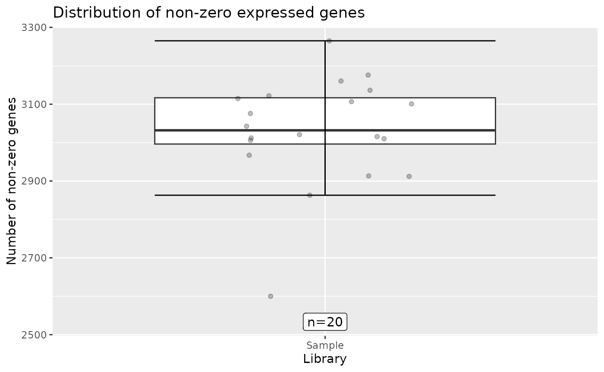
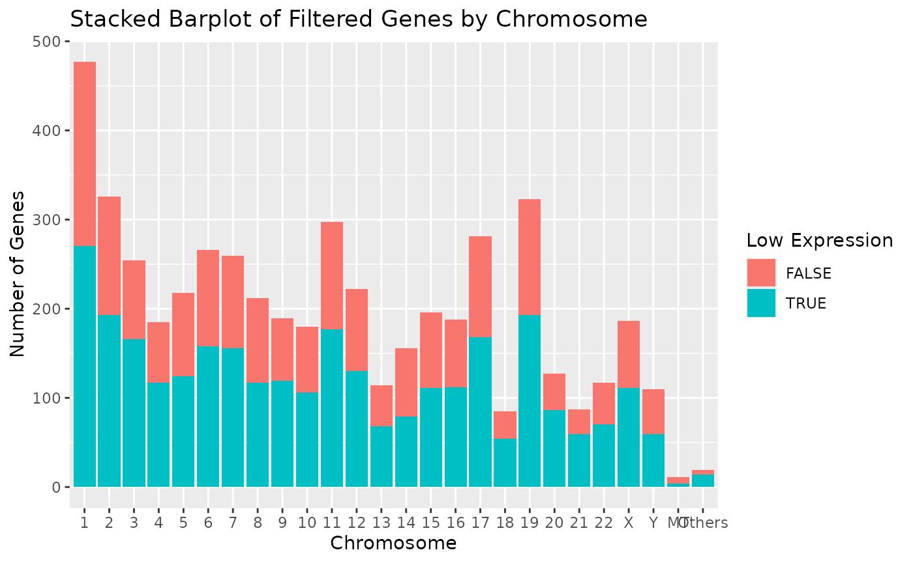
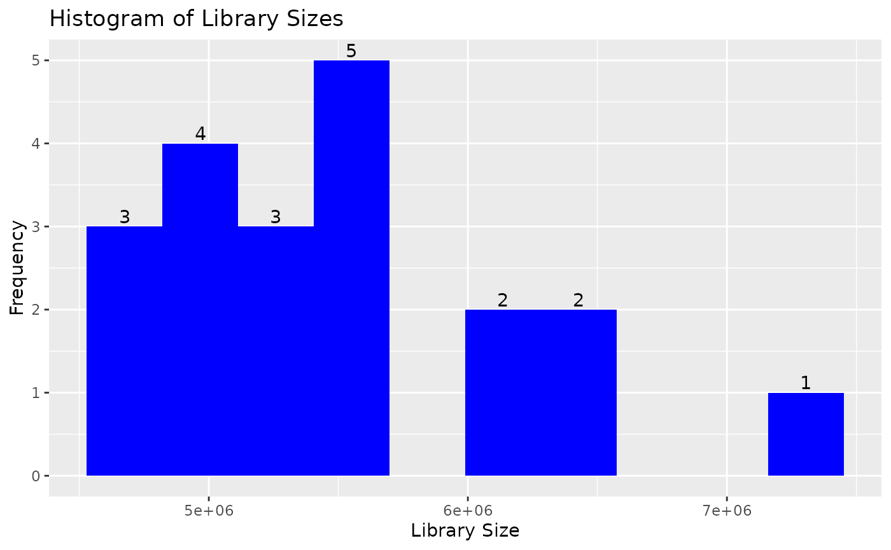
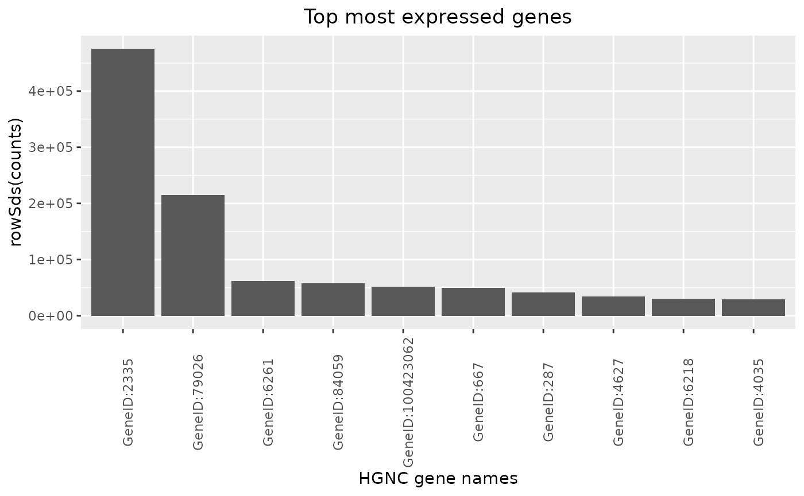
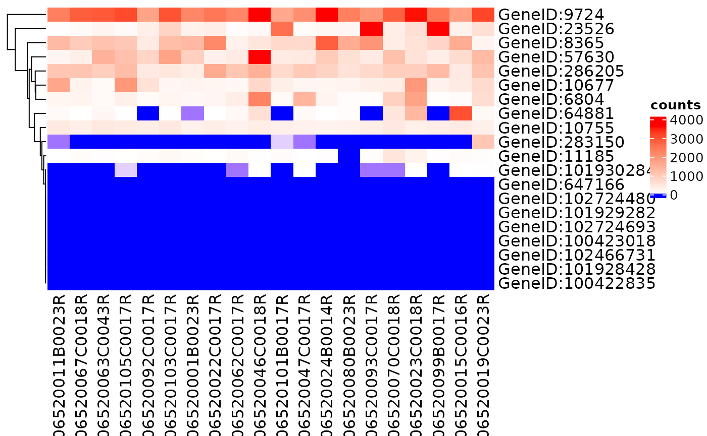
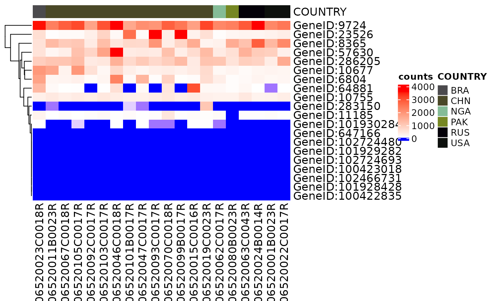
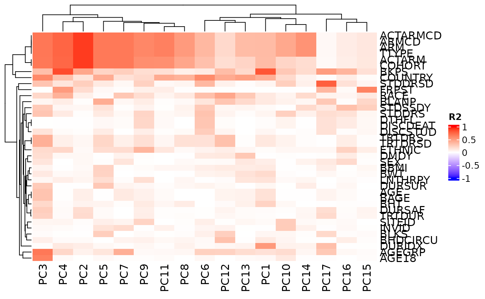

Introduction to `hermes`
Daniel Sabanés Bové
daniel.sabanes_bove@roche.comNamrata Bhatia
Stefanie Bienert
Benoit Falquet
Haocheng Li
Jeff Luong
Lyndsee Midori Zhang
Alex Richardson
Simona Rossomanno
Tim Treis
Mark Yan
Naomi Chang
Chendi Liao
Carolyn Zhang
Joseph N. Paulson
Source:vignettes/hermes.Rmd
hermes.RmdAcknowledgments
hermes is a successor of the Roche internal
rnaseqTools R package, and therefore many code ideas have
been borrowed from it. Therefore we would like to thank the
rnaseqTools authors for their work.
In particular, we would like to acknowledge Chendi Liao and Joe
Paulson for their guidance and explanations during the development of
hermes. We also discussed the class design with Valerie
Obenchain, and discussed RNAseq data standards with Armen
Karapetyan. We borrowed some ideas from the Roche internal
biokitr R package and discussed them with its maintainer
Daniel Marbach.
Finally, hermes originated as part of the NEST project.
We are grateful for the entire team’s support.
Thanks a lot to everyone involved!
Installation
First let’s see how we can install the hermes
package.
BioConductor
With the development version (3.15) of BioConductor, you
can install the current package version with:
if (!require("BiocManager")) {
install.packages("BiocManager")
}
BiocManager::install("hermes")GitHub
You can install the unstable development version from GitHub with:
if (!require("devtools")) {
install.packages("devtools")
}
devtools::install_github("insightsengineering/hermes")Introduction
The hermes R package provides classes, methods and
functions to import, quality-check, filter, normalize, analyze
RNAseq counts data. The core functionality is built on the
BioConductor ecosystem, especially
SummarizedExperiment. This is the vignette to read for new
users of this package.
In this vignette you are going to learn how to:
- Import
RNAseqcount data into thehermesready format. - Annotate gene information automatically from a central database
(e.g.
BioMart). - Add quality control (QC) flags to genes and samples.
- Filter the data set.
- Normalize the counts.
- Quickly produce descriptive plots.
- Perform principal components analysis.
- Produce a templated QC report.
- Perform differential expression analysis.
The packages used in this vignette are:
The datasets used in this vignette are:
?expression_set
?summarized_experimentImporting Data
The data for hermes needs to be imported into the
HermesData or RangedHermesData format.
Importing a SummarizedExperiment
The simplest way to import data is from a
SummarizedExperiment (SE) object. This is because a
HermesData object is just a special SE, with few additional
requirements and slots.
In a nutshell, the object needs to have a counts assay,
have certain gene and sample variables, and have unique row and column
names. The row names, i.e. the gene names, must start with a common
prefix GeneID or ENSG to enable easy
annotations. See ?HermesData for the detailed
requirements.
When the SE follows the minimum conventions, we can just call the
HermesData constructor on it:
object <- HermesData(summarized_experiment)And we have a HermesData object.
object
#> class: HermesData
#> assays(1): counts
#> genes(5085): GeneID:11185 GeneID:10677 ... GeneID:9087 GeneID:9426
#> additional gene information(12): HGNC HGNCGeneName ... chromosome_name
#> LowExpressionFlag
#> samples(20): 06520011B0023R 06520067C0018R ... 06520015C0016R
#> 06520019C0023R
#> additional sample information(74): Filename SampleID ... LowDepthFlag
#> TechnicalFailureFlagNote that in this case deprecated names were used for the
rowData and colData variables, therefore they
appear under “additional” gene and sample information. However we can
still call the default constructor because the new names will be filled
with missing values, e.g.:
head(annotation(object))
#> DataFrame with 6 rows and 4 columns
#> symbol desc chromosome size
#> <logical> <logical> <logical> <logical>
#> GeneID:11185 NA NA NA NA
#> GeneID:10677 NA NA NA NA
#> GeneID:101928428 NA NA NA NA
#> GeneID:100422835 NA NA NA NA
#> GeneID:102466731 NA NA NA NA
#> GeneID:64881 NA NA NA NAIf we want to map old column names to new column names to avoid
duplication with new missing value columns, we can do this using the
rename() method. For example here:
object <- summarized_experiment %>%
rename(
row_data = c(
symbol = "HGNC",
desc = "HGNCGeneName",
chromosome = "Chromosome",
size = "WidthBP",
low_expression_flag = "LowExpressionFlag"
),
col_data = c(
low_depth_flag = "LowDepthFlag",
technical_failure_flag = "TechnicalFailureFlag"
)
) %>%
HermesData()For example we can now see in the annotations that we successfully carried over the information since we mapped the old annotations to the new required names above:
head(annotation(object))
#> DataFrame with 6 rows and 4 columns
#> symbol desc chromosome size
#> <character> <character> <character> <integer>
#> GeneID:11185 INMT indolethylamine N-me.. 7 5468
#> GeneID:10677 AVIL advillin 12 18694
#> GeneID:101928428 LOC101928428 RNA-binding protein .. GL000220.1 138
#> GeneID:100422835 MIR3183 microRNA 3183 17 84
#> GeneID:102466731 MIR6769A microRNA 6769a 16 73
#> GeneID:64881 PCDH20 protocadherin 20 13 5838For a bit more details we can also call summary() on the
object.
summary(object)
#> HermesData object with 20 samples of 5085 genes.
#> - Library sizes across samples: mean 5476759, median 5365970, range 4632496 to 7262374
#> - Included assays (1): counts
#> - Additional gene information (7): GeneID StartBP ... SYMBOL
#> chromosome_name
#> - Additional sample information (73): Filename SampleID ... STDSSDY
#> technical_failure_flag
#> - Low expression genes (3021): GeneID:10677 GeneID:101928428 ...
#> GeneID:9084 GeneID:9426
#> - Samples with too low depth or technical failures (20): NA NA ... NA
#> NAFor the below, let’s use the already prepared HermesData
object.
object <- hermes_dataLikewise, when we receive the error “no ‘counts’ assay found”, we can
use the rename() function to change the name of the assay
in the SummarizedExperiment object to counts.
For example, the following object of type
SummarizedExperiment would have the assay name
count, and would produce the assay name error:
And we would use the following code to convert the assay name to
counts, making it able to convert into
HermesData object:
object_exp <- rename(object_exp,
assays = c(counts = "count")
)
object_exp <- HermesData(object_exp)Importing an ExpressionSet
If we start from an ExpressionSet, we can first convert
it to a RangedSummarizedExperiment and then import it to
RangedHermesData:
se <- makeSummarizedExperimentFromExpressionSet(expression_set)
object2 <- HermesData(se)
object2
#> class: RangedHermesData
#> assays(1): counts
#> genes(5085): GeneID:11185 GeneID:10677 ... GeneID:9087 GeneID:9426
#> additional gene information(12): HGNC HGNCGeneName ... chromosome_name
#> LowExpressionFlag
#> samples(20): 06520011B0023R 06520067C0018R ... 06520015C0016R
#> 06520019C0023R
#> additional sample information(74): Filename SampleID ... LowDepthFlag
#> TechnicalFailureFlagImporting a Matrix
In general we can also import a matrix of counts. We just have to pass the required gene and sample information as data frames to the constructor.
counts_matrix <- assay(hermes_data)
object3 <- HermesDataFromMatrix(
counts = counts_matrix,
rowData = rowData(hermes_data),
colData = colData(hermes_data)
)
object3
#> class: HermesData
#> assays(1): counts
#> genes(5085): GeneID:11185 GeneID:10677 ... GeneID:9087 GeneID:9426
#> additional gene information(3): GeneID SYMBOL chromosome_name
#> samples(20): 06520011B0023R 06520067C0018R ... 06520015C0016R
#> 06520019C0023R
#> additional sample information(72): Filename SampleID ... TTYPE STDSSDY
identical(object, object3)
#> [1] TRUENote that we can easily access the counts assay (matrix) in the final
object with counts():
cnts <- counts(object)
cnts[1:3, 1:3]
#> 06520011B0023R 06520067C0018R 06520063C0043R
#> GeneID:11185 3 66 35
#> GeneID:10677 1668 236 95
#> GeneID:101928428 0 0 0Annotations
hermes provides a modular approach for querying gene
annotations, in order to allow for future extensions in this or other
downstream packages.
Connection to Database
The first step is to connect to a database. In hermes
the only option is currently databases that utilize the
BioMart software suite. However due to the generic function
design, it is simple to extend hermes with other data base
connections.
In order to save time during vignette build, we zoom in here on a
subset of the original object containing only the first 10
genes.
small_object <- object[1:10, ]The corresponding function takes the common gene ID prefix as argument to determine the format of the gene IDs and the filter variable to use in the query later on.
httr::set_config(httr::config(ssl_verifypeer = 0L))
connection <- connect_biomart(prefix(small_object))Here we are using the prefix() method to access the
prefix saved in the HermesData object.
Querying and Saving Annotations
Then the second step is to query the gene annotations and save them in the object.
annotation(small_object) <- query(genes(small_object), connection)Here we are using the genes() method to access the gene
IDs (row names) of the HermesData object. Note that not all
genes might be found in the data base and the corresponding rows would
then be NA in the annotations.
Quality Control Flags
hermes provides automatic gene and sample flagging, as
well as manual sample flagging functionality.
Automatic Gene and Sample Flagging
For genes, it is counted how many samples don’t pass a minimum
expression CPM (counts per million reads mapped) threshold.
If too many, then this gene is flagged as a “low expression” gene.
For samples, two flags are provided. The “technical failure” flag is based on the average Pearson correlation with other samples. The “low depth” flag is based on the library size, i.e. the total sum of counts for a sample across all genes.
Thresholds for the above flags can be initialized with
control_quality(), and the flags are added with
add_quality_flags().
my_controls <- control_quality(min_cpm = 10, min_cpm_prop = 0.4, min_corr = 0.4, min_depth = 1e4)
#> Loading required namespace: testthat
object_flagged <- add_quality_flags(object, control = my_controls)Manual Sample Flagging
Sometimes it is necessary to manually flag certain samples as technical failures, e.g. after looking at one of the analyses discussed below. This is possible, too.
object_flagged <- set_tech_failure(object_flagged, sample_ids = "06520011B0023R")Accessing Flags
All flags have access functions.
head(get_tech_failure(object_flagged))
#> 06520011B0023R 06520067C0018R 06520063C0043R 06520105C0017R 06520092C0017R
#> TRUE FALSE FALSE FALSE FALSE
#> 06520103C0017R
#> FALSE
head(get_low_depth(object_flagged))
#> 06520011B0023R 06520067C0018R 06520063C0043R 06520105C0017R 06520092C0017R
#> FALSE FALSE FALSE FALSE FALSE
#> 06520103C0017R
#> FALSE
head(get_low_expression(object_flagged))
#> GeneID:11185 GeneID:10677 GeneID:101928428 GeneID:100422835
#> TRUE FALSE TRUE TRUE
#> GeneID:102466731 GeneID:64881
#> TRUE TRUEFiltering Data
We can either filter based on the default QC flags, or based on custom variables from the gene or sample information.
Based on Default QC Flags
This is simple with the filter() function. It is also
possible to selectively only filter the genes or the samples using the
what argument.
Based on Custom Variables
This can be done with the subset() function. Genes can
be filtered with the subset argument via expressions using
the gene information variables, and samples can be filtered with the
select argument using the sample information variables. In
order to see which ones are available these can be queries first.
names(rowData(object_flagged))
#> [1] "symbol" "desc" "GeneID"
#> [4] "chromosome" "size" "SYMBOL"
#> [7] "chromosome_name" "low_expression_flag"
names(colData(object_flagged))
#> [1] "Filename" "SampleID" "AGEGRP"
#> [4] "AGE18" "STDDRS" "STDDRSD"
#> [7] "STDSSDT" "TRTDRS" "TRTDRSD"
#> [10] "BHDCIRC" "BHDCIRCU" "ADAFL"
#> [13] "BLANP" "BKPS" "BLKS"
#> [16] "BTANNER" "FRPST" "DURIDX"
#> [19] "DURSAF" "DURSUR" "LNTHRPY"
#> [22] "AENCIFL" "STUDYID" "USUBJID"
#> [25] "RFSTDTC" "RFENDTC" "RFXSTDTC"
#> [28] "RFXENDTC" "RFICDTC" "RFPENDTC"
#> [31] "DTHDTC" "DTHFL" "SITEID"
#> [34] "INVID" "AGE" "AGEU"
#> [37] "SEX" "RACE" "ETHNIC"
#> [40] "ARMCD" "ARM" "ACTARMCD"
#> [43] "ACTARM" "COUNTRY" "DMDTC"
#> [46] "DMDY" "BAGE" "BAGEU"
#> [49] "BWT" "BWTU" "BHT"
#> [52] "BHTU" "BBMI" "ITTFL"
#> [55] "SAFFL" "INFCODT" "RANDDT"
#> [58] "TRTSDTC" "TRTSDTM" "TRTSTMF"
#> [61] "TRTEDTM" "TRTETMF" "TRTDUR"
#> [64] "DISCSTUD" "DISCDEAT" "DISCAE"
#> [67] "DISTRTFL" "AEWITHFL" "ALIVDT"
#> [70] "COHORT" "TTYPE" "STDSSDY"
#> [73] "low_depth_flag" "tech_failure_flag"
head(rowData(object_flagged)$chromosome)
#> [1] "7" "12" "GL000220.1" "17" "16"
#> [6] "13"
head(object_flagged$ARMCD)
#> [1] "COH1" "COH1" "COH8" "COH12" "COH9O" "COH9E"
object_flagged_subsetted <- subset(
object_flagged,
subset = chromosome == "5",
select = ARMCD == "COH1"
)Normalizing Counts
Normalizing counts within samples (CPM), genes (RPKM) or
across both (TPM) can be achieved with the normalize()
function. The normalize() function can also transform the
counts by the variance stabilizing transformation (vst) and
the regularized log transformation (rlog) as proposed in
the DESeq2 package.
object_normalized <- normalize(object_flagged_filtered)
#> -- note: fitType='parametric', but the dispersion trend was not well captured by the
#> function: y = a/x + b, and a local regression fit was automatically substituted.
#> specify fitType='local' or 'mean' to avoid this message next time.
object_rlog_normalized <- normalize(object_flagged_filtered, "rlog")
#> -- note: fitType='parametric', but the dispersion trend was not well captured by the
#> function: y = a/x + b, and a local regression fit was automatically substituted.
#> specify fitType='local' or 'mean' to avoid this message next time.The corresponding assays are saved in the object and can be accessed
with assay().
assay(object_normalized, "tpm")[1:3, 1:3]
#> 06520067C0018R 06520063C0043R 06520105C0017R
#> GeneID:10677 4.096418 3.323016 7.714990
#> GeneID:286205 2.985506 3.182624 3.769962
#> GeneID:8365 11.711741 12.421108 12.466491
assay(object_rlog_normalized, "rlog")[1:3, 1:3]
#> 06520067C0018R 06520063C0043R 06520105C0017R
#> GeneID:10677 8.101651 7.153488 10.281393
#> GeneID:286205 10.101287 9.859074 10.104426
#> GeneID:8365 10.023097 10.163191 9.935722The used control settings can be accessed afterwards from the metadata of the object:
metadata(object_normalized)
#> $control_quality_flags
#> $control_quality_flags$min_cpm
#> [1] 10
#>
#> $control_quality_flags$min_cpm_prop
#> [1] 0.4
#>
#> $control_quality_flags$min_corr
#> [1] 0.4
#>
#> $control_quality_flags$min_depth
#> [1] 10000
#>
#>
#> $control_normalize
#> $control_normalize$log
#> [1] TRUE
#>
#> $control_normalize$lib_sizes
#> NULL
#>
#> $control_normalize$prior_count
#> [1] 1
#>
#> $control_normalize$fit_type
#> [1] "parametric"Note that also the filtering settings are saved in here. For custom
normalization options, use control_normalize(). For
example, to not use log scale but the original scale of the counts:
object_normalized_original <- normalize(
object_flagged_filtered,
control = control_normalize(log = FALSE)
)
#> -- note: fitType='parametric', but the dispersion trend was not well captured by the
#> function: y = a/x + b, and a local regression fit was automatically substituted.
#> specify fitType='local' or 'mean' to avoid this message next time.
assay(object_normalized_original, "tpm")[1:3, 1:3]
#> 06520067C0018R 06520063C0043R 06520105C0017R
#> GeneID:10677 16.105854 9.007544 209.1084
#> GeneID:286205 6.920033 8.079569 12.6418
#> GeneID:8365 3353.172671 5483.360511 5658.6256Descriptive Plots
Simple Plots
A series of simple descriptive plots can be obtained by just calling
autoplot() on an object.
autoplot(object)
Note that individual plots from these can be produced with the series
of draw_*() functions, see ?plot_all for the
detailed list. Then, these can be customized further. For example, we
can change the number and color of the bins in the library size
histogram:
draw_libsize_hist(object, bins = 10L, fill = "blue")
Top Genes
Top genes can be calculated and visualized in a barplot.
By passing another summary function, also the variability can be ranked for example.

Heatmap of Genes among Samples
Relative expression of genes can be displayed using a heatmap
draw_heatmap(object[1:20], assay_name = "counts")
The heatmap can be grouped by labels in the HermesData
object, such as "COUNTRY" or "AGEGRP".
draw_heatmap(object[1:20], assay_name = "counts", col_data_annotation = "COUNTRY")
Correlation between Samples
A sample correlation matrix between samples can be obtained with the
correlate() function. This can be visualized in a heatmap
using autoplot() again. See ?calc_cor for
detailed options.
Principal Components
Let’s see how we can perform Principal Components Analysis (PCA).
PCA of Samples
PCA can be performed with calc_pca(). The result can be
summarized or plotted.
pca_res <- calc_pca(object_normalized, assay_name = "tpm")
summary(pca_res)$importance
#> PC1 PC2 PC3 PC4 PC5 PC6
#> Standard deviation 22.08095 17.34762 15.19930 12.80689 11.76153 10.48121
#> Proportion of Variance 0.24066 0.14854 0.11403 0.08096 0.06828 0.05422
#> Cumulative Proportion 0.24066 0.38919 0.50322 0.58418 0.65246 0.70668
#> PC7 PC8 PC9 PC10 PC11 PC12
#> Standard deviation 9.812505 8.950926 8.530826 8.196006 7.905973 7.216002
#> Proportion of Variance 0.047520 0.039550 0.035920 0.033160 0.030850 0.025700
#> Cumulative Proportion 0.754200 0.793750 0.829670 0.862830 0.893680 0.919380
#> PC13 PC14 PC15 PC16 PC17
#> Standard deviation 6.92755 6.532485 5.501383 5.151959 3.983283 2.302918e-14
#> Proportion of Variance 0.02369 0.021060 0.014940 0.013100 0.007830 0.000000e+00
#> Cumulative Proportion 0.94307 0.964130 0.979070 0.992170 1.000000 1.000000e+00
autoplot(pca_res)Note that various options are available for the plot, for example we
can look at different principal components, and color the samples by
sample variables. See ?ggfortify::autoplot.prcomp for
details.
autoplot(
pca_res,
x = 2, y = 3,
data = as.data.frame(colData(object_normalized)), colour = "SEX"
)Correlation with Sample Variables
Subsequently it is easy to correlate the obtained principal
components with the sample variables. We obtain a matrix of R-squared
(R2) values for all combinations, which can again be visualized as a
heatmap. See ?pca_cor_samplevar for details.

QC Report Template
In order to quickly obtain a quality control report for a new
RNAseq data set, you can proceed as follows.
- Save your input
SummarizedExperimentusing R’ssave()function in a binary data file (e.g. ending with.rdasuffix). - Load the
hermespackage inRStudioand click on:File>New File>R Markdown>From Templateand select the QC report template fromhermes. - Fill in the few parameters in the
yamlheader, including the required file paths for the input file from above, and where the resultingHermesDataobject should be saved. - Knit the document.
The report contains the above mentioned descriptive plots and PCA analyses and can be a useful starting point for your analysis.
Differential Expression
In addition to the above QC analyses, simple differential expression
analysis is supported by hermes. In addition to the
filtered object (normalization of counts is not required) the variable
name of the factor to contrast the samples needs to be provided to
diff_expression().
colData(object) <- df_cols_to_factor(colData(object))
diff_res <- diff_expression(object, group = "SEX", method = "voom")
head(diff_res)
#> log2_fc stat p_val adj_p_val
#> GeneID:8000 -2.3200712 -4.239244 0.0004209192 0.9118348
#> GeneID:51227 -1.0467295 -4.032550 0.0006788432 0.9118348
#> GeneID:344558 1.6896266 3.824046 0.0010993677 0.9118348
#> GeneID:51575 -0.7760844 -3.746293 0.0013155805 0.9118348
#> GeneID:151242 -3.4358998 -3.570103 0.0019741997 0.9118348
#> GeneID:8904 -0.6100354 -3.542864 0.0021017199 0.9118348Note that we use here the utility function
df_cols_to_factor() which converts by default all character
and logical variables to factor variables. This is one possible way here
to ensure that the utilized group variable is a factor.
Afterwards a standard volcano plot can be produced.
autoplot(diff_res, log2_fc_thresh = 8)Summary
The hermes R package provides classes, methods and
functions to import, quality-check, filter, normalize and analyze
RNAseq counts data. In particular, the robust
object-oriented framework allows for easy extensions in the future to
address user feature requests. These and other feedback are very welcome
- thank you very much in advance for your thoughts on
hermes!
Session Info
Here is the output of sessionInfo() on the system on
which this document was compiled running pandoc 3.1.1:
#> R version 4.3.1 (2023-06-16)
#> Platform: x86_64-pc-linux-gnu (64-bit)
#> Running under: Ubuntu 22.04.2 LTS
#>
#> Matrix products: default
#> BLAS: /usr/lib/x86_64-linux-gnu/openblas-pthread/libblas.so.3
#> LAPACK: /usr/lib/x86_64-linux-gnu/openblas-pthread/libopenblasp-r0.3.20.so; LAPACK version 3.10.0
#>
#> locale:
#> [1] LC_CTYPE=en_US.UTF-8 LC_NUMERIC=C
#> [3] LC_TIME=en_US.UTF-8 LC_COLLATE=en_US.UTF-8
#> [5] LC_MONETARY=en_US.UTF-8 LC_MESSAGES=en_US.UTF-8
#> [7] LC_PAPER=en_US.UTF-8 LC_NAME=C
#> [9] LC_ADDRESS=C LC_TELEPHONE=C
#> [11] LC_MEASUREMENT=en_US.UTF-8 LC_IDENTIFICATION=C
#>
#> time zone: Etc/UTC
#> tzcode source: system (glibc)
#>
#> attached base packages:
#> [1] stats4 stats graphics grDevices utils datasets methods
#> [8] base
#>
#> other attached packages:
#> [1] hermes_1.0.1.9014 SummarizedExperiment_1.30.2
#> [3] Biobase_2.60.0 GenomicRanges_1.52.0
#> [5] GenomeInfoDb_1.36.0 IRanges_2.34.0
#> [7] S4Vectors_0.38.1 BiocGenerics_0.46.0
#> [9] MatrixGenerics_1.12.2 matrixStats_1.0.0
#> [11] ggfortify_0.4.16 ggplot2_3.4.2
#> [13] BiocStyle_2.28.0
#>
#> loaded via a namespace (and not attached):
#> [1] Rdpack_2.4 DBI_1.1.3
#> [3] bitops_1.0-7 gridExtra_2.3
#> [5] testthat_3.1.9 biomaRt_2.56.1
#> [7] rlang_1.1.1 magrittr_2.0.3
#> [9] clue_0.3-64 GetoptLong_1.0.5
#> [11] compiler_4.3.1 RSQLite_2.3.1
#> [13] png_0.1-8 systemfonts_1.0.4
#> [15] vctrs_0.6.3 stringr_1.5.0
#> [17] pkgconfig_2.0.3 shape_1.4.6
#> [19] crayon_1.5.2 fastmap_1.1.1
#> [21] magick_2.7.4 dbplyr_2.3.2
#> [23] backports_1.4.1 XVector_0.40.0
#> [25] labeling_0.4.2 utf8_1.2.3
#> [27] rmarkdown_2.22 ragg_1.2.5
#> [29] purrr_1.0.1 bit_4.0.5
#> [31] xfun_0.39 MultiAssayExperiment_1.26.0
#> [33] zlibbioc_1.46.0 cachem_1.0.8
#> [35] jsonlite_1.8.5 progress_1.2.2
#> [37] EnvStats_2.7.0 blob_1.2.4
#> [39] highr_0.10 DelayedArray_0.26.3
#> [41] BiocParallel_1.34.2 prettyunits_1.1.1
#> [43] parallel_4.3.1 cluster_2.1.4
#> [45] R6_2.5.1 bslib_0.5.0
#> [47] stringi_1.7.12 RColorBrewer_1.1-3
#> [49] limma_3.56.2 brio_1.1.3
#> [51] jquerylib_0.1.4 Rcpp_1.0.10
#> [53] bookdown_0.34 assertthat_0.2.1
#> [55] iterators_1.0.14 knitr_1.43
#> [57] Matrix_1.5-4.1 tidyselect_1.2.0
#> [59] yaml_2.3.7 doParallel_1.0.17
#> [61] codetools_0.2-19 curl_5.0.1
#> [63] lattice_0.21-8 tibble_3.2.1
#> [65] withr_2.5.0 KEGGREST_1.40.0
#> [67] evaluate_0.21 desc_1.4.2
#> [69] BiocFileCache_2.8.0 xml2_1.3.4
#> [71] Biostrings_2.68.1 circlize_0.4.15
#> [73] filelock_1.0.2 pillar_1.9.0
#> [75] BiocManager_1.30.21 checkmate_2.2.0
#> [77] foreach_1.5.2 generics_0.1.3
#> [79] rprojroot_2.0.3 RCurl_1.98-1.12
#> [81] hms_1.1.3 munsell_0.5.0
#> [83] scales_1.2.1 glue_1.6.2
#> [85] tools_4.3.1 locfit_1.5-9.8
#> [87] forcats_1.0.0 fs_1.6.2
#> [89] XML_3.99-0.14 grid_4.3.1
#> [91] tidyr_1.3.0 rbibutils_2.2.13
#> [93] edgeR_3.42.4 AnnotationDbi_1.62.1
#> [95] colorspace_2.1-0 GenomeInfoDbData_1.2.10
#> [97] cli_3.6.1 rappdirs_0.3.3
#> [99] textshaping_0.3.6 fansi_1.0.4
#> [101] S4Arrays_1.0.4 ComplexHeatmap_2.16.0
#> [103] dplyr_1.1.2 gtable_0.3.3
#> [105] DESeq2_1.40.1 sass_0.4.6
#> [107] digest_0.6.31 ggrepel_0.9.3
#> [109] farver_2.1.1 rjson_0.2.21
#> [111] memoise_2.0.1 htmltools_0.5.5
#> [113] pkgdown_2.0.7 lifecycle_1.0.3
#> [115] httr_1.4.6 GlobalOptions_0.1.2
#> [117] bit64_4.0.5